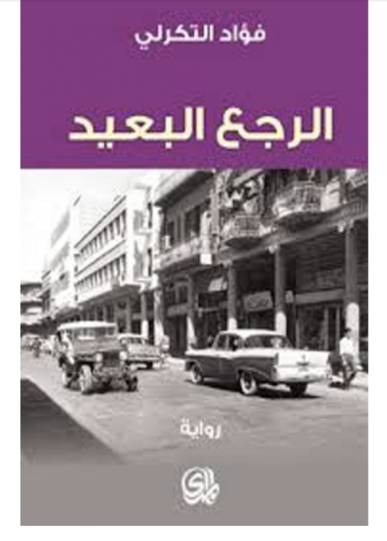

Book cover of The Long Way Back
This is part of the #100ArabNovels project, where I try to revisit the Arab Writers'Association's list of 100 most significant novels, as part of trying to understand the Arab imaginary post-2011
Fouad al-Tikerli (1927-2008)'s debut novel, written between the late 1960s and the late 1970s and finally published in 1980 in Beirut, stands alone among all 100 novels as being one of the very few novels that captures the plight of Arab women with astonishing sensitivity and rare compassion. Al-Tikerli centers women at the very heart of his, 480 pages long epic, during Iraq's turbulent decade under the rise of the Ba'ath party. Four generations of women in an old house in Bab al-Sheikh district in Baghdad try to come to terms with the social upheaval of the late 1950s as the world they know undergoes profound changes. Many of which are quite frightening. The men are also there, but what is surprising and unusual about al-Tikerli's novel is that the women question, and think and protest and resent, the reality of being and living under the constraints of patriarchy and its injustices. And al-Tikerli conveys all these grievances with uncommon perceptiveness and what we might think of as protofeminist perspective.
Although al-Tikerli chose 'rape' and its consequences as the central motif for his saga, he did not succumb to the usual misogynistic, sexist trope so prevalent among writers of his generation. Perhaps it was his training as a judge, perhaps his generosity as a writer, but al-Tikerli wrote, what might be, the least problematic account of sexual violence in modern Arabic literature. And that, in and of itself, remains unparalleled. Perhaps Latifa al-Zayat wrote something similar, in terms of its sensitivity to the predicament of Arab women, but otherwise women, the violence they are subjected to, and how it affects them and how they respond to it, never takes a central place in modern Arabic literature, and is never written about with such subtlety and understanding. If al-Tikerli wrote nothing else, this completely suffices as a wholly unique work of fiction.
Al-Tikerli not only centers rape as the primary motif of his story, but he ties it with the idea of a reckless, cruel and adolescent authority -- read the rising Ba'ath party. One cannot understand sexual violence without embedding it in a political and social milieu and al-Tikerli shows that megalomaniac impulses of authoritarianism do not stop just at subjecting others via violence, coercion and terror, but sex is at the very heart of that. The sense of impunity that Ba'athism engendered in its officials, the sanctioning of brutal acts of violence, the flip side of unchecked power, is inescapably tied to, if not premised on a sense of ownership of and subjection of women and their bodies.
But its not just the Ba'ath and its rabid obsession with power, its the deep loathing and fear men have of women's sexuality, and complete fixation on it at the same time, that produces a psychotic response. The construction of an entire social and moral edifice on the bodies of women and tying that to a sense of worth, a profound sense of self, for both men and women, produces tragic consequences. Al-Tikerli, brilliantly understands that this paradoxical notion of loathing and unrequited desire, only leads to nothing short of a disaster. It is one of the very few times that an Arab author writes about the notion of self-worth, and the immense normative edifice that is built around the idea of a woman's honour, body and who and how has the access to the body. In the case of his novel al-Tikerli points to how fragile this colossal structure is and it easily crumbles under the ridiculous idea that someone's honour (or even the right to live) relies in the presence or absence of a thin mucosal tissue (hymen), that logically is not indicative of anything and yet decides a woman's worth, future and even life (in the case of honour killings for example).
The novel's, realism and its generational scope places it among attempts of modern Arabic literature to reflect that profound change, and profound relation to time, under the long process of modernity (for Iraq that might be identified with the end of Ottoman rule and British Occupation). The violence of WWI and the rise of the modern Iraqi nation state by 1932, must have had seismic shifts and changes in Iraqi society. And that is reflected in al-Tikerli's premise of old aristocratic family, slowly losing its privileges, in the changing post-independence society and how that impacts the lives of the younger generation straddling those two different 'times', the idealized past and the inchoate present and naturally the feared future.
Al-Tikerli is an astute observer of human nature, and he does what every great writer does: give their characters their humanity. His characters are immediately visible, present, they spring from the pages, full, entire, with all their fears, joys, quirks, hesitations, the very inflection of the tones of their voices as they think, dream, speak, it is all captured with startling clarity. Its almost transparent. A lot can be written on al-Tikerli's psychological insight, which is almost incomparable. Few before managed to delve into their characters' innermost selves and bring them out on a page with such crystal-clarity. And its not just that al-Tikerli does this with adults, but also with children. It is equally rare in Arabic modern literature to find a character of a young girl, so well-developed and so cleverly rooted into the heart of the story. It adds a whole other perspective embedded in the story, which reveals a whole other layer of emotional and mental experiences, that we might miss as readers and as observers, and which only a child can see and feel.
And it all has to do with al-Tikerli refusing to see things as surface or as appearance. Al-Tikerli understands that our perception of the world is relational, there is the reality of the world, and there is our unique experience of it. And al-Tikerli's Baghdad, in 1963, changes and modulates every time a character speaks, just like a song and like all great novelists, al-Tikerli gives his characters different voices, unique to who they are and what they are, and by extension their world, and worldview changes as they speak and as they think.
But al-Tikerli's novel, is also a story of death. Is that expected? Maybe. None of the resolutions of the post-independent states narratives are happy ones. And al-Tikerali's story is flanked by death at both ends, and in between the characters, in different ways, respond to the earth-shattering realization of their potential, and inevitable mortality. As expected many of the responses are deeply existentialist (al-Tikerli owes a huge debt to Dostoevsky) and the existentialist analysis of despair, despair in face of death, whether of a friend, a lover, a husband, or one's own, is perhaps some of the finest written in Arabic. Al-Tikerli's manages to create characters that are completely human, and who can, faced with their own vulnerability respond in the most self-destructive of ways, but also the most nondescript of ways. Some characters become alcoholic, other characters slowly withdraw from life, being unable to completely face it or completely let go of it. Looking into the face of death rarely leaves us the same. And al-Tikerli understands that, and he doesn't sensationalize how giving in to our despair or our 'death drive', doesn't have to be that we completely lost our connection to life. But it is about losing ourselves to a particular moment in time or a particular thought, that we are unable to go beyond or escape its grip.
One interesting observation, is that in a rather unusual precedent, large swathes of the novel are told in mid-century Baghdadi dialect, with its Aramaic substrates, Persian phonetic influence and Ottoman-Turkish loanwords and traces. This might have been a deterrent for Arab readers (not many might have been exposed to it, in comparison to Levantine dialects for example), but it creates an interesting effect. The dialogue reveals that complex history with Iran, Turkey (Ottoman Empire) and even ancient civilizations ( Neo-Babylonians and the Achaemenids for examples). But also raises question on the different relationships we have with vernacular Arabic and the standard form, and how the two effect each other.
The questions of how modernity and the post-independence nation state can truly 'liberate' the Arabs, beyond the dividing lines of sect, religion, class and even gender, all boil up to the surface, again and again, and remain unanswered. The 2011 revolutions and their ongoing reiterations throughout the Arab world, are only proof of the desperate need to answer them. Al-Tikerli even kills one of his protagonist, who finally comes to terms with the fact that he can embrace a new progressive worldview in contrast to the stifling past. It is to his credit that al-Tikerli foresaw the absolute necessity to go beyond the immediate conflict with the Ba'ath and that there is no future without looking hard and long at ourselves and answering all those questions at the peril of death.
*The novel was translated to English by Catherine Cobham, and published by the American University Press in 2001